The Empire has captured 4 Ewoks and Chewbacca, Han Solo's right-hand man! We are tasked with designing a robot to rescue them from the Empire stronghold. The catch? The robot must be fully autonomous.
Black tape winds through the treacherous twists and turns of the course, providing a path to follow using reflective sensor navigation. But this path doesn't last forever: we'll have to figure out how to cross a suspension bridge, or perish in the lava below.
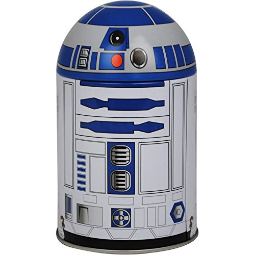
Timing
Infrared Light Detection
R2-D2 carefully monitors the archway and emits two infrared signals at different frequencies to let us know if the tripwire is deactivated. When deactivated, we have five seconds to safely traverse the archway. If we miss our window of opportunity, the Stormtrooper guards will be alerted to our presence.
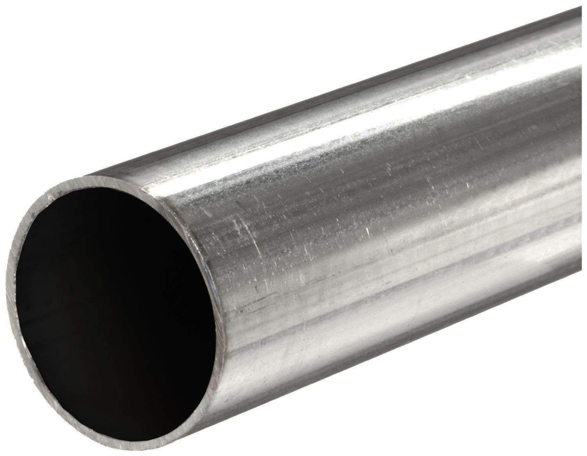
Saving the Ewoks
Zipline Riding
The Empire stronghold features large ziplines running across two regions of the course. We can use these to our advantage to both navigate the course and return the Ewoks to the beginning of the course.
Prototyping
Prototypes played a big role in the design of our robot since Day 1. From sketches to cardboard models to 3D printed and hand-machined parts, each helped us decide on the final design for our robot.
Sketches from week 1 of development. We tried to exhaust all possible solutions before committing to one.
Our Solution
Meet Hi-Lo Ren, our conflicted hero.
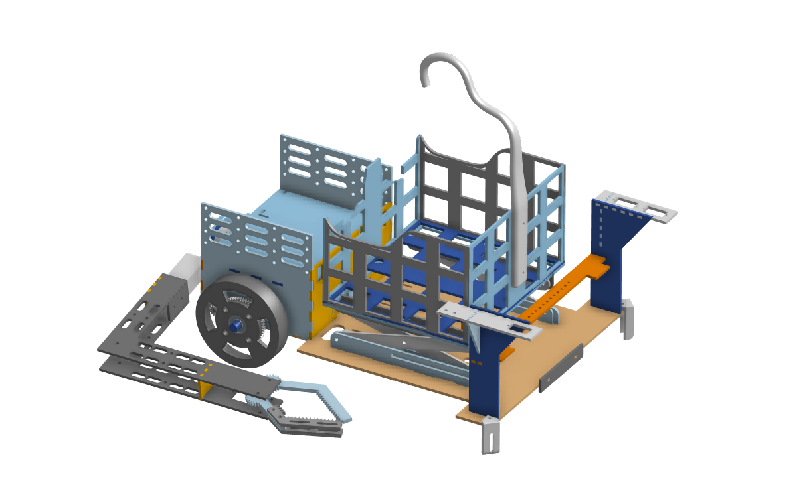
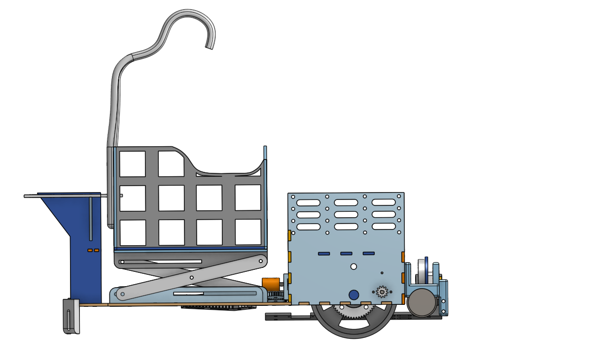
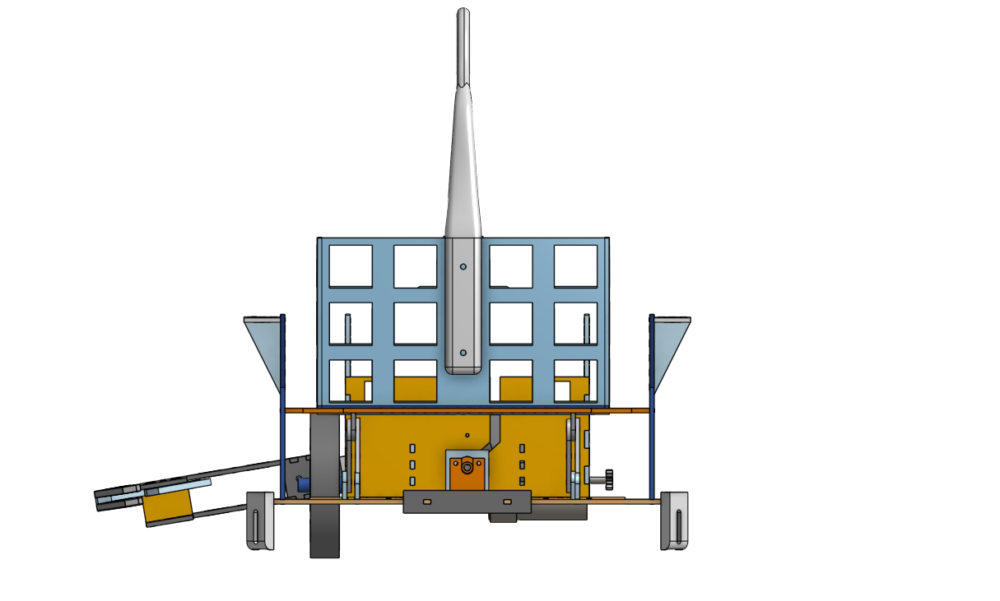
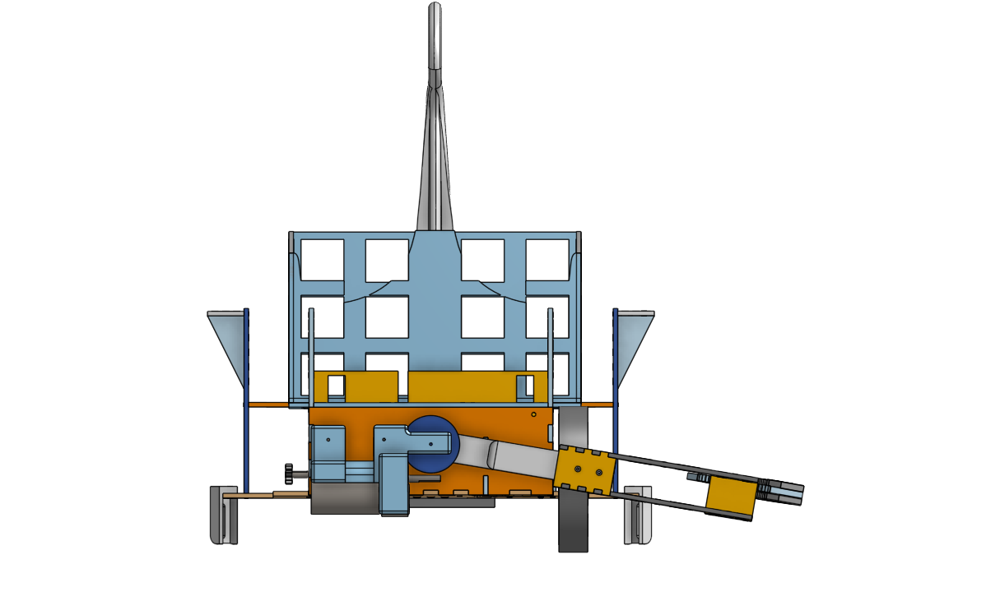
The Systems Driving Our Robot
Chassis and Drive
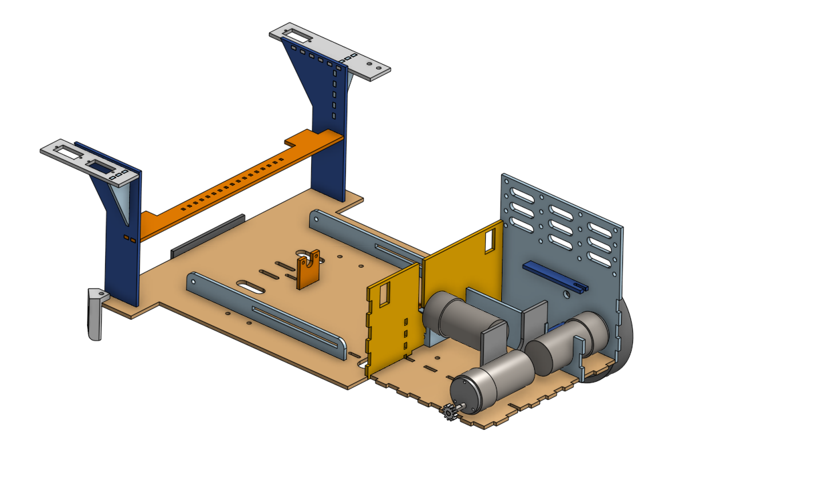
Our drive system features a rear-wheel differential drive with two casters in the front. The motors for the drive system are encased in the "brain" of our robot and are powered by independent H-Bridge circuits. Whereas most robots designed a box-shaped robot, our chassis has a wheelbase similar to that of the modern car.
The Claw
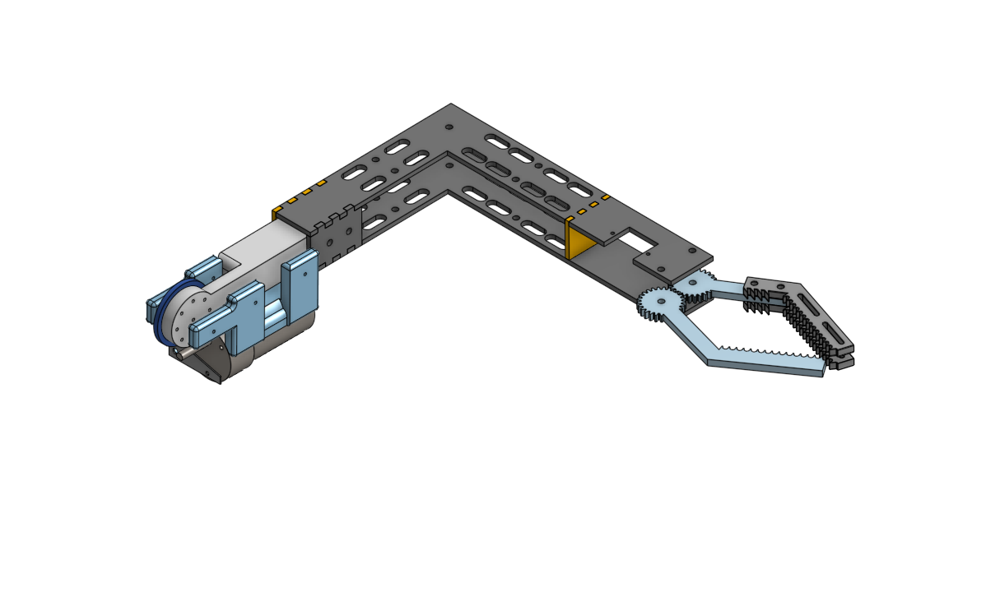
The distinguishing feature of our robot ("la pince de résistance" - Kevin). While most designs aimed for two servo-controlled claw mounted on each side, our design includes a motor and potentiometer pair for precise 180 degree motion of a single, rear-mounted claw. The claw fingers hold a infrared emitter-detector pair; when the beam of light is broken by an Ewok, the claw closes on it and lifts it into the basket.
Storage and Return
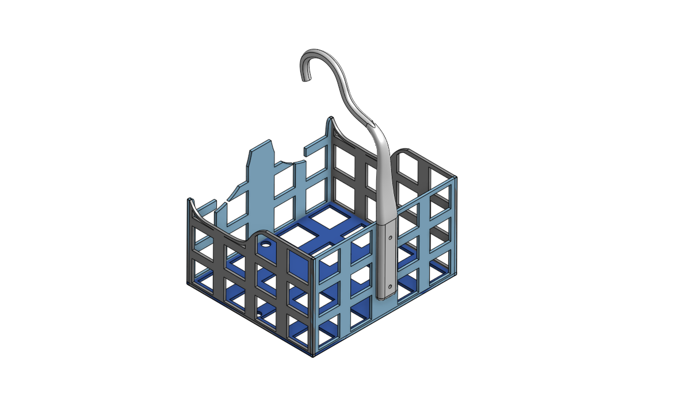
To store the Ewoks throughout our journey, we constructed a sturdy hardboard basket, complete with a 3-D printed PLA hook. This hook allows the basket to be delivered to the start of the course via zipline. To raise the basket to the zipline, we built a simple mechanical scissor-lift. The linear motion created by the lead-screw/nut combination is translated into vertical motion by the single layer of scissor arms and is limited by a bump-switch.
Gap Traversal
To cross the gaps, we built (after many, many prototypes) two bridges. The bridges were made from hardboard due to rigidity and ease to prototype with a laser cutter. The bridges were also filed down at the rear edge to allow for easy crossing. The stops on the bridges were placed to prevent the robot pushing the bridges into the gaps, and were placed to allow for less precision in robot position to land properly. Each is dropped by a small servo-controlled arm.
Competition Day
Hi-Lo Ren fought his way out of the Groups Stage of the competition and into the Elimination Stage.
Unfortunately, his time was cut short by an unforeseen injury (one of his circuits blew).
See the video below for his perfect run the morning of competition.
Strategy
Consistency + High Point Potential
Our strategy for the competition was to only get Ewoks One and Three along with Chewbacca, revised from our previous plan of getting all the Ewoks. We decided on this strategy because due to our size, Ewoks two and four would require overly complicated maneuvers to pick up, and it would still give us a potential 11 out of 17 possible points, which puts us ahead of much of the competition. The Ewoks we went for were also the ones we could consistently get during testing. We also used the zipline so we wouldn’t have to backtrack through the course or dump Ewoks over the edge, risking potential casualties. During testing, we were able to consistently get the two Ewoks and Chewbacca.
Pitfalls
Gravity
Hi-Lo Ren could consistently traverse the course during testing, but inconsistency in dropping objects caused mishaps during competition. In the first round, our bridge bounced off the edge at an awkward angle and Hi-Lo Ren fell into the first gap, forcing us to reset our robot and leaving us out of time right as we were placing the basket on the zipline. In our second round, one Ewok was knocked out of the basket by the claw due to the way it fell into our basket (see the videos below). It is unlikely there is a solution to these issues; the placement of bridges and Ewoks in the basket are nearly random. That being said, although we did have issues with bridge-deploying during testing, we had never lost an Ewok during a run.
Elimination
Up in Smoke
After progressing to the elimination stage, Hi-Lo Ren's claw' suddenly stopped in the middle of our run, and the soul-crushing sight of smoke emanated from within. It turned out that one of our H-Bridge circuits (used to power and control our motors) blew, likely due to a shorted connection. We had encountered this problem in the past, but the issue had not occcured since rebuilding all our connections and redesigning Hi-Lo Ren's chassis to give us more room for wire organization a fortnight ago. After hours of tuning and adjusting code, it was heartbreaking to see our robot fail because of a shorted circuit.
Post-Mortem
“Let the past die. Kill it, if you have to.” - Kylo Ren
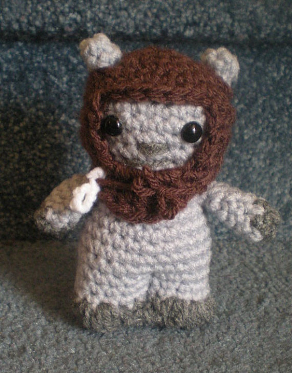
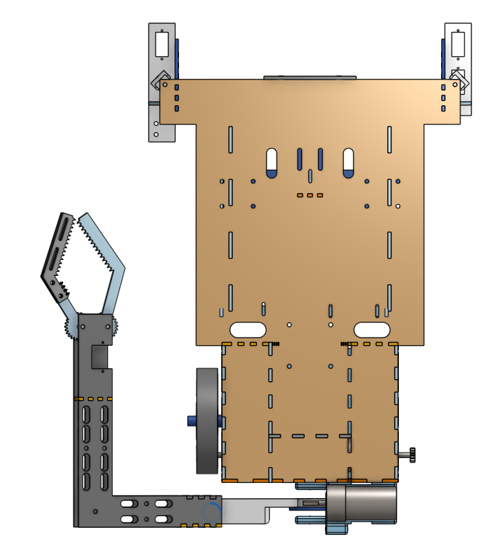
Project Management Mistake
Potential Points
We took on a lot of risk by planning on using the zipline because we saw it as the best way to get all possible points. A key strategic error we made early on was trying to maximize potential points rather than playing it safe by aiming for fewer points with more consistency. We managed to recover and were able to get our robot working consistently before the competition, at the cost of ignoring the two Ewoks that gave us the most trouble due to our size.
Technical Mistake
Size
Since we designed our basket to be able to comfortably hold all four Ewoks plus Chewbacca, our robot ended up both longer and wider than most of our peers’ robots. This was a major disadvantage when it came to the archway, as we couldn’t simply grab the second Ewok and tape follow through it. We ended up solving this problem with some creative realignment using key landmarks nearby, but had to give up the second Ewok. Similarly, for the fourth Ewok, our robot's geometry would not allow us to climb the carefully-placed bridge, and pivot enough to grab the Ewok without driving off the edge. As full systems testing couldn't happen until our robot was constructed, a full redesign to accomodate these issues wasn't an option.
Technical Mistake
Claw Design
The claw, though the defining feature of the robot, was the largest source of issue for us during development, costing us a week and a half of valuable testing time. Initially, we decided that a large servo would be enough to power control the claw; however, after increasing the claw size, the torque provided by the servo turned out to be not enough. We then designed around a high-quality stepper motor, mounted on the back of the robot using a worm gear to spin the arm of the claw. Though more than enough torque, we could not properly support both ends of the worm gear, and the fraction of millimeters deflection was enough to cause the gear to slip during rotation. Finally, we turned to 3D-printing for a reliable, secure worm-gear and potentiometer pair to rotate the claw.
Next Time
The biggest mistake of our development would be our coupling of systems together. Our initial claw design mounted directly on the rear of our robot, where our circuits are mounted. While iterating through claw designs, we spent hours debugging the H-Bridge circuits since we would inevitably bump a connection. Pairing this with the poor connection wires we made, hours that should have been spent testing were wasted trouble-shooting circuits. We also delayed the development of the claw in favor of developing a solid chassis. Seeing as the only way to score points was to pick up Ewoks, this was a brazen move, and one that led to many late nights redesigning.
Since we mounted the circuits on the top of the motors, when the motors blew, we had to redo all of the connections. This led to many more hours of debugging, and we ruined more than one electrical connection doing so.
In doing this again, we would make the circuits more accessible, and spend more time developing wiring paths and connections, as well as aim to make our robot more consistent, even at the cost of some points.
{kind=link}
{kind=link}
{kind=link}
{kind=link}
{kind=link}
{kind=link}
{kind=link}